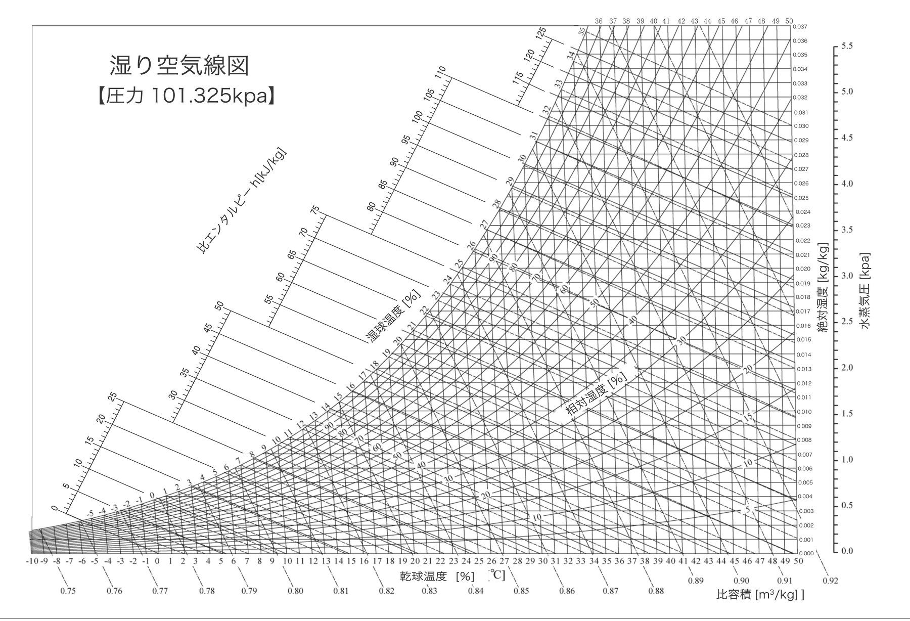

この参考書の使い方
投影資料（教科書）の裏付けをまとめたものです。教科書の流れはそのままに、「なぜそう言えるのか」を詳しく書いています。お客様に全部話す必要はありません。営業が自分で理解して腹に落ちていれば、短い言葉でも重みが出ます。
数字には出典を付けています。計算値は使った式を、未確認のことは未確認と書いています。
なぜ冬に壁の中で結露するのか
教科書の恐怖③〜⑦に対応。ここが一番大事な章です。
1-1 湿り空気線図の読み方
湿り空気線図は、空気の温度と、その空気が含んでいる水蒸気の量の関係を1枚にした図です。
- 横軸：空気の温度（℃）。右へ行くほど暖かい
- 縦軸：空気1kgに含まれる水蒸気の量。図の単位はkg（0.007＝7g）。上へ行くほど水分が多い
- 右上がりの曲線：湿度（相対湿度、%）。一番外側の曲線が湿度100%で、その温度の空気が持てる水蒸気の限界

読み方の手順（室内23℃・湿度50%の場合、図1-2）：
- 横軸の23℃と、湿度50%の曲線が交わる点を打つ
- その点から右へたどると、縦軸で約0.0087kg。空気1kgに水蒸気が約8.7g入っている
- 水蒸気の量はそのまま、温度だけが下がると考えて、同じ高さのまま左へたどる
- 一番外側の100%の曲線にぶつかった温度が約12℃。これが露点温度で、この空気は12℃より冷たいところに触れると水滴に変わる。温度の線はわずかに傾いているので、ぶつかった点から線に沿って下へ読む
1-2 露点温度を計算する
図から読む値は、気象分野で広く使われるMagnus-Tetens近似式でも確かめられます。
γ = ln(RH/100) + 17.27×T ÷ (237.3+T)
露点温度Td = 237.3×γ ÷ (17.27−γ)
（T：気温[℃]、RH：相対湿度[%]）
水蒸気量x[g/kg] = 622×e ÷ (1013.25−e) （e：水蒸気圧[hPa]＝飽和水蒸気圧×RH/100、大気圧1013.25hPa）
参考：室内20℃・湿度50%なら水蒸気約7.3g・露点約9.3℃。
1-3 冬、水蒸気は室内から屋外へ動く
空気と水蒸気の動きには、3つの性質があります（前回10/2研修の内容）。
- 温度：暖かい方から冷たい方へ
- 気圧：気圧の高い方から低い方へ
- 水蒸気の量：多い方から少ない方へ、均等になろうとする
冬は、室内（23℃・湿度50%で約8.7g）の方が、外の空気よりずっと水蒸気が多い。気象庁の1月の平年値で比べると、どの地域でも外は室内の半分以下です。
| 地点 | 1月平均気温 | 相対湿度 | 空気1kgの水蒸気量 |
|---|---|---|---|
| 大阪 | 6.2℃ | 61% | 約3.6g |
| 米子 | 4.7℃ | 74% | 約3.9g |
| 福岡 | 6.9℃ | 63% | 約4.0g |
| 岩手（盛岡） | −1.6℃ | 73% | 約2.5g |
| 室内 | 23℃ | 50% | 約8.7g |
湿度が高い米子でも、寒い岩手でも、冷たい空気は水蒸気をあまり持てません。だから水蒸気は、壁を通って室内から屋外へ出ていこうとします。日本の一般的な冬なら、この向きは変わりません。だから防湿気密シートは室内側に張ります。
1-4 壁の中には必ず露点がある
屋外0℃・室内23℃のとき、壁の中の温度は室内側の23℃から屋外側の0℃へ下がっていきます（断熱材の中で大きく下がる）。0℃と23℃の間には必ず12℃があります。つまり、断熱材をどれだけ入れても、室内を暖かくしても、壁の中のどこかに「結露する温度」の場所が必ずできるということです。
室内の水蒸気がその場所まで届けば、そこで水になります。防湿気密シートの役割は、水蒸気をその手前、室内側で止めることです。
1-5 コップの例えは「続き」まで話す
冷たいコップの外側に水滴がつくのは、コップの周りの空気が冷やされて露点を下回るから。ここまではお客様もイメージできます。大事なのはその続きです。
氷が溶けて飲み物がぬるくなると、水滴はつかなくなります。冷たさの元がなくなるからです。でも家は、外の気温を変えられません。冬の間ずっと壁の外側は冷やされ続け、壁の中は結露しやすい状態が続きます。だから最初から対策しておく、という話につながります。
結露を放っておくと何が起きるか
教科書の実害①②・真実①に対応。
2-1 耐震性能と断熱性能が落ちる
構造：壁の中で結露が続くと、柱・間柱が湿った状態が続き、木材が腐ります。構造材が傷めば、構造計算をしていても、制震ダンパーを入れていても、本来の強さは出せません。
断熱：断熱材が水を含むと、熱を止める力が落ちます。光熱費が上がる、なぜか急に暑い・寒いと感じ始める、といった形で表に出てきます。
どちらも壁の中で進むので、住んでいて気づけません。壁を壊さないと分からず、気づいたときにはリフォームでは直せない規模になっていることもあります。
2-2 性能の数字は「建てた日」の数字
断熱等級・UA値・C値・耐震等級・制震ダンパー。これらは建てた日の性能を示す数字です。15年後、20年後もその性能が続くかどうかは、壁の中に湿気を入れない手当てをしているかで決まります。
断熱も耐震も良い数字をそろえても、最後の1点、壁の中の湿気対策で妥協すれば、年数が経ったときにその数字は意味をなさなくなる。そこに妥協しないのがLIFEXです。
2-3 シロアリの話で勝負しない理由
「結露→木が腐る→シロアリが集まる」とシロアリを話の終点にすると、防蟻処理を手厚くしている会社と比べられたときに、その一言で話が終わってしまいます（10/5佐古顧問の指摘）。LIFEXが伝えるべきなのはシロアリではなく、構造と断熱の性能が持続することです。シロアリの話は聞かれたら答える補足にとどめます。
執念① 寒冷地向けの0.2mmシートを全国で
教科書の執念①-1〜①-3に対応。0.2mmにしている本当の理由はここです。
3-1 防湿気密シートのA種とB種
住宅用の防湿フィルムはJIS A 6930で区分されています。透湿抵抗は「水蒸気の通しにくさ」で、数字が大きいほど水蒸気を通しません。
| 区分 | 厚み | 透湿抵抗（m²·s·Pa/ng） | 推奨される地域 |
|---|---|---|---|
| A種 | 0.1mm | 0.082以上 | 一般地域 |
| B種 | 0.2mm | 0.144以上（A種の約1.8倍） | 寒冷地 |
| LIFEX | 0.2mm | B種適合品（ジェイベック「ボーダー」） | 全国共通 |
本来は寒冷地向けのB種を、寒冷地ではない地域でも使っている。水蒸気を通しにくい分、壁の中に水蒸気がより入りにくい。これが0.2mmにしている本質です。
※矩計図の注記「防湿抵抗0.082以上」は最低基準（A種相当）の書き方で、実際に使っている「ボーダー」はB種適合品です。
※矩計図の「吹付硬質ウレタンフォーム（A種3）」のA種は断熱材の規格（JIS A 9526）の区分で、シートのA種・B種とは別物です。
3-2 外気に接するところはすべて張る
LIFEX標準仕様書の断熱欄では、1階床・外壁・屋根・外気に接する天井の4か所すべてに「防湿気密シート t=0.2」と書かれています。壁だけでなく、外の空気に触れるところは全部張り、全国どの地域でも同じ仕様です。
2階の張り出し部分（外気に接する床）にも張っています（LIFEX本部確認、2026-10-05）。
3-3 プラスα：うっかりにも破れにくい
大工が長い木材を運ぶとき、施工済みのシートに当たってしまうことは現場で実際にあります。小さな穴でも、そこから水蒸気が入ります。厚みのあるシートはこうした「うっかり」にも破れにくい。ただしこれはおまけの効果で、主役は3-1の「水蒸気を通しにくい」点です。
執念② 仮張り床の剥がし・乾燥工程
教科書の執念②-1・②-2に対応。
上棟直後の基礎コンクリートや木材は、まだ水分を含んでいます。そのまま床を張って閉じると、その水分が中にこもり、断熱材を傷めます。
LIFEXでは次の順番で施工します。
- 建て方のとき、1階の床合板を仮張りする
- 屋根（野地板）と外壁の面材を張った後、約1週間乾かす
- 仮張りを剥がし、床下断熱材（押出法ポリスチレンフォーム3種 t=100）と防湿気密シート（ジェイベック「ボーダー」）を施工する
- 合板を本張りする
工期を優先する現場では飛ばしがちな工程に、あえて時間を使っています。
執念③ 夏型結露と通気層
教科書の執念③に対応。
夏は水蒸気の向きが冬と逆になり、外の湿気が壁の中に入ろうとします。冷房で室内側が冷えていると、壁の中で結露することもゼロではありません。
LIFEXの外壁の裏には通気層があり、空気が流れ続けています。湿気をため込まず、濡れたまま閉じ込めないための層です。
お客様への例えはお風呂のカビが分かりやすい。濡れた瞬間にカビが生えることはありませんし、お風呂上がりに拭いて換気すれば生えません。生えるのは、濡れたまま閉め切った状態が長く続いたときです。
想定QA集
出典・参考資料一覧
湿り空気線図（図1-1・1-2）：史幸工務店「ハイブリッド・エコ・ハートQ 住宅の科学③ 水分・湿度・空気線図・環境編」掲載の湿り空気線図（圧力101.325kPa）。図1-2の曲線の強調・点・矢印は本資料で追記（Magnus-Tetens近似式の計算値に合わせて配置）
露点温度・水蒸気量の計算値（23℃・50%→約8.7g/kg・露点約12.0℃、20℃・50%→約7.3g/kg・露点約9.3℃）：Magnus-Tetens近似式（係数17.27・237.3）と大気圧1013.25hPaによる計算値。温湿度は説明用の仮定条件で、実測値ではない
冬の屋外の気温・湿度（1-3の表）：気象庁「平年値（1991〜2020年）」1月（https://www.data.jma.go.jp/stats/etrn/、2026-10-05取得）。大阪6.2℃・61%・蒸気圧5.8hPa／米子4.7℃・74%・6.3hPa／福岡6.9℃・63%・6.4hPa／盛岡−1.6℃・73%・4.0hPa。水蒸気量は蒸気圧から x=622e/(1013.25−e) で計算
空気・水蒸気が動く3つの性質：前回10/2研修「断熱×気密×換気」の内容に準拠
結露による耐震性能・断熱性能の低下と光熱費の増加、シロアリで勝負しない理由、夏型結露と通気層の説明：佐古顧問の指導内容（2026-10-05定例）。具体的な低下率・金額の数字は使用していない
JIS A 6930のA種・B種（厚み・透湿抵抗の規格値）：市村「防湿気密シート モイストバリア」製品案内（2024-10-07、https://www.ichimura.co.jp/information/pdf/20241007.pdf）。A種＝一般地域推奨・B種＝寒冷地推奨はフクビ化学工業「バリアエース」製品ページ（https://www.fukuvi.co.jp/product/3/02/31）。JIS原本は未確認
LIFEXの防湿気密シート t=0.2mm、施工箇所、壁の構成：LIFEX標準仕様書「断熱」欄（1階床・外壁・屋根・外気に接する天井の4か所で「防湿気密シート t=0.2」、2026-09-21確認）。LIFEX標準矩計図1/30（更新日2025.12.22、2026-10-05提示）：外壁＝サイディング／通気金具t=15／透湿防水シート／耐力面材t=9／吹付硬質ウレタンフォームt=95／ジェイベック（防湿気密シート）／PB t=12.5、注記「防湿層（JIS A6930）防湿抵抗0.082以上」「外壁・屋根に通気層」「GL+1mまでの軸組等に防腐防蟻処理」。0.2mmの全国共通採用と、外気に接する床（2階の張り出し部分）への施工はLIFEX本部確認済み（2026-10-05）。製品はジェイベック「ボーダー」で、製品ページに「寒冷地向けB種適合品」と記載（http://www.jbeck.co.jp/products/kimitsu/border/index.html、2026-10-05確認）
床の仮張り→乾燥→剥がして断熱・防湿気密シート→本張りの工程：LIFEX標準施工マニュアル統合版 第1版（2026/08/11）p6・p12。乾燥期間「約1週間」と目的は2026-08-24中央建設様ショートMTGでの本部説明
断熱等級6・UA値0.46・C値0.5という基本仕様：前回10/2研修「断熱×気密×換気」教科書・参考書に準拠（社内資料LIFEX公式初回セミナースライド20260521・LIFEX_話法マニュアル）
想定QA「シロアリ対策」の注釈（加圧注入の防蟻処理）：LIFEX本部の営業知見（2026-10-02共有）。メーカー資料等での裏付けは未確認